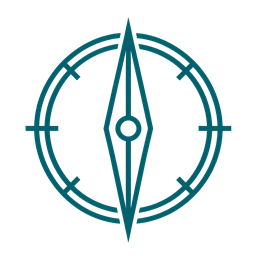

UN SOLO ESPACIO DE TRABAJO
Tu equipo está en Recruitment.
Psicométricos forma parte del panel de colaboradores. Ingresa con tu usuario y contraseña habituales.
Ir al acceso del equipo →
Way FinderTalentoReclutamientoUN SOLO ESPACIO DE TRABAJO
Psicométricos forma parte del panel de colaboradores. Ingresa con tu usuario y contraseña habituales.
Ir al acceso del equipo →